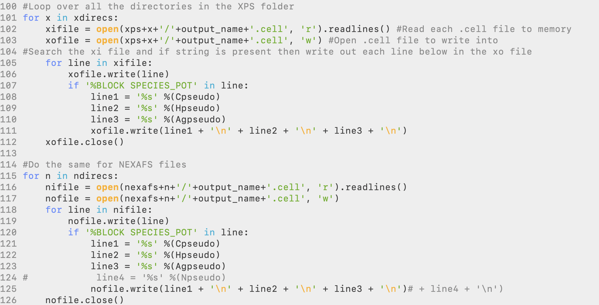
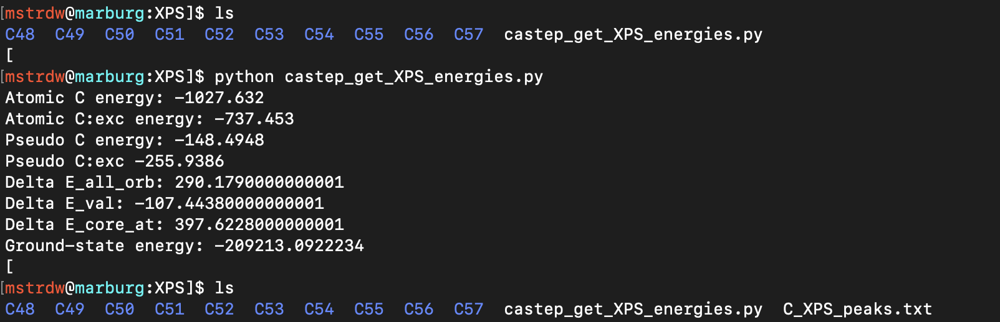
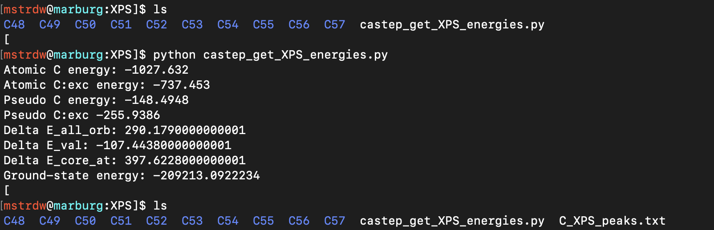

MaurerGroupDocs
Welcome to the Maurer group documentation!
This book contains useful guides and tutorials to help you get up to speed with the software and scripts used within our group.
Contributing
This book was created using mdBook.
Additional pages can be created by adding a new entry into the SUMMARY.md file.
This will create a blank markdown file where you can include your contribution.
CASTEP XPS and NEXAFS Tutorial
All tools needed to generate XPS and NEXAFS spectra can be found on the Maurer Group Github in the 'grouptools/NEXAFS_scripts' repository. Included in this are several tools to help in this process:
- autoscript.py - Python script which will generate all XPS and NEXAFS input files
- core_excitation.py - Code in which the autoscript will use
- castep_get_XPS_energies.py - Python script to calculate the XPS binding energies
- _plot_xps.py - Python script to sum up XPS peaks and broaden into a spectrum
- execute_molpdos.sh - Bash script to run MolPDOS for all angles and atoms
- plot_nexafs.py - Python script to process MolPDOS output data into a broadened NEXAFS spectra
- plot_mo.py - Python script to process MolPDOS output data into MO orbital spectra
1. Set-Up
To begin with, a suitable file system, naming convention, and some initial ground-state calculations are needed to help with the process. In CASTEP all files, input, and output have the same seedname so for our system we will use a 'molecule_metal' configuration. This is important to implement right from the beginning as scripts used later will use this convention. The 'molecule' is simply just the investigated molecule, e.g. azulene, benzene, pyridine, and the 'metal' is the metal substrate, e.g. Cu, Au, or simply gas if no metal surface is present. So for example in this tutorial, we will be looking at azulene on a silver surface so files would use azulene_Ag as the seedname to make files such as azulene_Ag.cell and will continue with this tutorial using this system.
Next, to organise the filing system to use, once all set up this should contain:
- Input and output files from the initial ground-state calculation
- freestand directory (Directory containing files from the calculation of the free-standing overlayer, only needed when including a metal surface)
- XPS directory (Directory generated by autoscript.py)
- NEXAFS directory (Directory generated by autoscript.py)
and should end up looking something like this.

The initial singlepoint ground-state calculation should be the first to be completed. The reason for this can be for several reasons but the main one is to work out the ground-state total energy that will be used later to calculate the XPS binding energies. It is then important to make sure the settings you are using for this are sufficient and will be carried on through the process. If this is your first time using CASTEP or do not know the pseudopotential for an element, this step can be used to generate on-the-fly pseudopotentials and obtain the pseudopotential strings for all elements in the calculation. If you are already well versed in CASTEP and already know which pseudopotentials you will use, you can set the in from the start here and skip this.
If you're investigating a molecule on a metal surface rather than a gas-phase molecule, you will need to perform a second singlepoint calculation. This will be carried out in the freestand directory. In here you should copy over the .cell and .param files from the ground-state but rename them azulene_free to describe correctly and avoid confusion and required for a later step. In this directory you will need to open up the .cell file and delete the metal surface, leaving only the molecule, which is called the free-standing overlayer. This step is carried to generate the azulene_free.check file which is used later on in the NEXAFS calculations for the MO projection. If your system is a gas-phase system (no metal surface) this step and be skipped as the .check file that will be used will be from the ground-state calculation previously ran so for this would be the azulene_gas.check file.
To acquire the pseudopotential string if needed, open any of the .usp files. Here we will use the C_C18_PBE_OTF.usp file. At the top of the file should give you all the information about the pseudopotential used and near the bottom of the box will be the definition string for you to copy to use for the XPS and NEXAFS calculations. In this case for carbon, the string is 2|1.4|10|12|13|20:21(qc=7), record this down and do the same for each element in the system to use in the next step.

2. Generation of XPS and NEXAFS inputs using autoscript.py
To generate the XPS and NEXAFS directories with all the input files needed for each individual carbon atom you need to set up a directory with:
- autoscript.py
- core_excitation.py
- Geometry file of the system
The core_excitation.py file can be left alone and doesn't need to be altered. To use this code all you need to do is open up the autoscript.py file and change the required fields and set the settings you want in the calculation, overall, this will be the same as the ground-state calculations with a few exceptions which will be explained. At the top the first thing to alter is the input_name, the geometry file to read in and the output_name you want the script to use as the CASTEP seedname. In this case, these two are basically the same and would be azulene_Ag.cell and azulene_Ag but through ASE, you can read in any file format you want if needed.
Next is where you need to set the elements and pseudopotential strings you save before. Here you can create any number you need and copy in the pseudopotential strings. For the atoms you want to study the XPS for you will need to copy in the pseudopotential string twice again but this time adding in the electron configuration to include either a full core-hole (XPS) or half core-hole (NEXAFS). This is done starting at line 81, where for a C1s calculation we put in element='C' and pspots='2|1.4|10|12|13|20:21{1s1,2s2,2p3}(qc=7)' with the full core-hole in the xce and the same again for nce but this time with a half core hole.

Also, starting on line 100 is where the pseudopotential strings you stated at the top are written out to the .cell files and you need to add/change to match with the elements you have, this will include adding in any new lines for the number of elements and adding this line to the print line for both XPS and NEXAFS sections. In the default script included is an example of how a new line if a 4th element nitrogen is needed and if a gas-phase calculation is begin run then the metal and line3 would need to be commented out.
The final part is to set the parameters you want for the calculation. Under the CASTEP calculators QM1 and QM2 you should set castep_command to the path of where your CASTEP binary is located. Next in QM1 choose and set all the keywords you want to include in the XPS calculation. Then if any settings need to be changed for the NEXAFS calculation add these to QM2. Most likely this will only need to be nextra_bands and elnes_nextra_bands. This is due to only the first needed for XPS and usually, only a low number is needed and any higher is a waste computationally. For the NEXAFS calculations the second term is needed and to generate a nice full spectrum without it ending too soon a much larger number of bands are needed and for the MolPDOS analysis, both nextra_bands and elnes_nextra_bands need to be the same value in the NEXAFS case. So set this value to a higher value(trial and error/learning will help with picking a suitable number).
To get a general idea of what are suitable settings you will need to change and use, cut_off_energy=450 is suitable enough for most systems, a sanity check to make sure you have a suitable value is to look at the .usp files for all elements and at the top of the file are cut-off values and a level of accuracy they give, make sure all elements are at least FINE, kpoints_mp_grid='6 6 1' is sufficient for metal surface structures and only '1 1 1' is needed for gas-phase. For XPS calculations nextra_bands=100 is more than enough. For elnes_nextra_bands this depends on the metal used and for gas-phase as well the size of the unit cell. The larger the unit cell the higher number needed along with higher atomic number metals, a good starting point would probably be 1000.
Finally, if a MolPDOS analysis is needed you need to set a few other keywords for this. The first is the molecular orbitals you want to project out. Here you can give as many MO states as you want but the key ones you want are the frontier states around the HOMO and LUMO. To get the correct numbers of the HOMO and LUMO you can simply sum up all the electrons in the valence shell of all atoms in the molecule and divide by two. For hydrogen this is 1, carbon is 4, nitrogen 5 etc. The halved number will correspond to the HOME state. So in this case for azulene, C10H8 has a total of 48 valence electrons, so state 24 is the HOMO. You would ideally like a range above and below the bandgap with more unoccupied states than occupied. In the script change the range in MO to the required range and secondly is the reference .check file needed. This will be the azulene_free.check so change this to the right name. For a gas-phase calculation, I would suggest something along the lines of azulene_ground.check as keeping the same name as it is already would not work. Last is to comment out the assert 0 on line 130 to run the part of the script that will write these settings out.
Once all of that is done it is time to run autoscript.py, you should see two directories called XPS and NEXAFS have been created. These should contain a directory for each carbon atom in your molecule labeled with a number, this number just corresponds to the order it appears in the input geometry file. If you look into these directories they should contain the two CASTEP input files .cell and .param. You can easily copy the parameter file over to the main folder, set the charge to zero and use it for the ground state calculation.

You will notice that running autoscript.py will give a warning that a pseudopotential path has not been given to the calculator, this is fine and is not a problem as we are specifically stating our pseudopotentials out and not using a database which is what the code is asking for. This function can be used to point to a database of pseudopotentials which is not implemented to keep full control over the pseudopotentials we want to use.
3. Setting up and running jobs
Now you can copy over the contents of your newly created XPS and NEXAFS folders back to your main folder and finally set a few things left before copying over the files to your chosen cluster to run them.
The first would be to create your reference azulene_free.check file needed for the MolPDOS calculation. Once this is done this file then needs to be copied into every atom directory in the NEXAFS directory. If a gas-phase calculation is being performed this will instead be the azulene_gas.check created from the ground state calculation and changed to be called azulene_ground.check. Also, what is needed is a .deltascf file which gives the parameters needed for the MolPDOS calculation, here we point the code to the azulene_free.check file and list the specific states that we want to project out.

Once done each atom folder should look like this.

All that's is left is to run all of the XPS and NEXAFS jobs. In regards to the number of nodes and walltime needed for the calculations, the XPS calculations will be similar to the length of the ground-state calculation. The NEXAFS will require more memory (nodes) and longer walltimes and the best practice would be to run only one calculation first to gauge this and then use the settings for all of the rest. With time a better understanding of the requirements needed will be able to be learned. Once done transfer the data back to your local machine and for NEXAFS calculations you should see the usual outputs along with a .molpdos_state_x_1 file for all MO state you gave earlier.

4. Obtaining and plotting XPS
The first task that needs to be done after all the calculations are done is to calculate the XPS binding energies for each atom and plot the spectrum, to do this we will use the two scripts:
- castep_get_xps_energies.py
- plot_xps.py
The castep_get_xps_energies.py python script should be placed in the XPS directory and then the necessary parameters have to be changed in the script manually. These will be the filename, element and atoms to the required settings that match the system. Once this is done, the script can be executed and it will read the groud-state and excited-state energies for each atom and calculate and apply the pseudopotential correction, and finally print out the binding energies into an XPS_peaks.txt file.
 

With the XPS binding energies now written out, the plot_xps.py script can be used to take the individual shifts and sum them all up and plot them into a broadened spectrum. By commenting out the assert 0 command on line 87 the script will broaden each individual atom peak and create text files for each atom which can be plotted along with the full spectrum to show the breakdown of the spectrum.
5. NEXAFS Post-Processing and MolPDOS
Now to run the NEXAFS post-processing we need a settings file with all the information needed, this will be a .molpdos file. In this file, you will see a variety of settings needed to calculate the NEXAFS and MO data. The most significant ones that need to be changed are:
nexafs_theta- The theoretical X-ray incidence angle you want to calculate fornexafs_xshift- The XPS binding energy corresponding to the same carbon, will be done automatically by the scriptnexafs_state- Which atomic species you want to calculate for, you will need to only change the first number. This number will be +1 the number of elements in the system, as for this example, is4 1 1 1. 4 because the first element is hydrogen, second is carbon, third is silver and the last is the new excited carbon,C:exc, we defined (this element will always be the last one in the list).
If you want to project the NEXAFS transitions onto molecular states of a reference system, you also have to set:
modos_state- Set the corresponding states to exactly the same orbital values you selected previously for the calculation

To run the MolPDOS post-processing you first need to have the MolPDOS binary located in your path and this will use the execute_molpdos.sh script to first add the correct nexafs_xshift to the right atoms and then run the MolPDOS binary for each angle you want. So these need to be set at the top of the script, change the first Array to the correct values of the atoms and the AngleArray to the incidence angles you want to calculate. The change the molecule, metal and element to the correct setting and then run the script.
This script will take some time to run and finish for all of the atoms and angles but will write out the progress of the script into the terminal to show you the progress. To not take up the terminal nohup can be used to run the script in the background. Once done this will have to generate a new folder in each of the atoms folders for each angle chosen and be filled with a whole host of .dat files.


These should be organised into a corresponding directory labeled based on the theta value, for example, t25. Repeat this MolPDOS process for each incidence angles you want to simulate for and for all carbon atoms. Normal practice would be for 00, 25, 53, and 90 degrees. Your directory for all carbons should look like this.

You should use an automated script for this procedure. Provided is the auto_molpdos.sh script which should be executed in the NEXAFS directory, It reads the C_XPS_peaks.txt file (copy from XPS to the NEXAFS directory), changes a generic .molpdos file to match the desired angle and XPS binding energies, goes to the corresponding carbon directory, and executes the script, and moves the resulting data in the respective folders.
6. Summation and broadening of the NEXAFS spectra
The final step left to do is to take all of the data produced through the MolPDOS post-processing, sum the contributions from all carbon atoms and applying a broadening function to create the NEXAFS spectra. For this you will need the python scripts:
- plot_nexafs.py
- plot_mo.py
These scripts should be placed in the NEXAFS directory and change the corresponding settings inside the script to match you data. These are listed into different groups, the first is Broadening Parameters. These are the settings of the pseudo-Voight broadening scheme that will be applied, the settings in there are the default carbon settings that usually work best but they can be modified to create the best spectra. If a different element is being studied N or O K-edge then the xstart and xstop values will have to be changed to fall in the energy range of the chose element. The next group are the System Settings, these are the main settings to change. Here we have the molecule and metal variables to change to the name of your system, and then also the element. We have the n_type which will decide what NEXAFS spectra you want to generate, a number between 1-4, default would be 4, the script shows what each number performs. angle you will set to the same angles you selected when running MolPDOS, so in this case 't00', 't25', 't53', t90'. Then the numbers will be the number range of your atom directories, here 48 to 57, and the atom number, this is as described before the value the excited element comes in the list of all elements, always the last number.

Run this script and it will generate (for each angle) a *deltas.txt, containing the summed up raw data of all NEXAFS transitions, and a _*spectrum.txt' file with the fully calculated broadened spectrum. If the individual carbon contributions of the NEXAFS spectrum is desired then comment out the assert 0 command on line 122 and this will generate a separate .txt file for each individual atom at each angle.

The last step would be to output the individual MO contributions, these settings to change are the exact same as before for the NEXAFS script but now with one more which is MO, which will be the list of MO orbitals you choose to project out. Run the script again and you will receive a *.txt file of the delta peaks and the broadened orbital projection for all orbitals and angles. This can now be plotted with its corresponding NEXAFS spectra to view its contributions.
Compiling FHIaims on Avon
Step 1: Git clone FHIaims from gitlab
To gain access to the Gitlab, you can e-mail kokott@fhi-berlin.mpg.de or aims-coordinators@fhi-berlin.mpg.de which should get you access after setting up a user account.
Once you have access,
- SSH into Avon HPC
ssh username@avon.scrtp.warwick.ac.uk - Git clone FHIaims repository
git clone https://aims-git.rz-berlin.mpg.de/aims/FHIaims.git
Step 2: Compiling FHIaims
Load the necessary modules - NB: Avon uses a different intel convention to previous use on older HPC i.e., Orac or Tinis.
module load iccifort/2019.5.281 impi/2019.7.217 imkl/2019.5.281
module load GCCcore/9.3.0
module load CMake/3.16.4
cd into the FHIaims directory and issue the following command mkdir build && cd build.
Within the build/ directory touch initial.cmake
Example of initial.cmake
set(CMAKE_Fortran_COMPILER mpiifort CACHE STRING "" FORCE)
set(CMAKE_Fortran_FLAGS "-O3 -fp-model precise" CACHE STRING "" FORCE)
set(Fortran_MIN_FLAGS "-O0 -fp-model precise" CACHE STRING "" FORCE)
set(LIB_PATHS "$ENV{MKLROOT}/lib/intel64" CACHE STRING "" FORCE)
set(LIBS "mkl_intel_lp64 mkl_sequential mkl_core mkl_blacs_intelmpi_lp64 mkl_scalapack_lp64" CACHE STRING "" FORCE)
set(CMAKE_C_COMPILER icc CACHE STRING "" FORCE)
set(CMAKE_C_FLAGS "-O3 -ip -fp-model precise" CACHE STRING "" FORCE)
Next issue the command cmake -C initial.cmake. ../. - after this is complete output then issue the next command make -j 8 - NB: the number refers to the number of processes on that machine.
The compiled code aims.$VERSION.scalapack.mpi.x will be in build/ directory.
Compiling FHIaims on Sulis
Step 1: Git clone FHIaims from gitlab
To gain access to the Gitlab, you can e-mail kokott@fhi-berlin.mpg.de or aims-coordinators@fhi-berlin.mpg.de which should get you access after setting up a user account.
Git clone FHIaims repository git clone https://aims-git.rz-berlin.mpg.de/aims/FHIaims.git
Step 2: Compiling FHIaims
Load the necessary modules -
module purge
module load foss/2021b
module load CMake
cd into the FHIaims directory and issue the following command mkdir build && cd build.
Within the build/ directory touch initial.cmake
Example of initial.cmake
set(CMAKE_Fortran_COMPILER mpif90 CACHE STRING "")
set(CMAKE_Fortran_FLAGS "-O3 -ffree-line-length-none -fallow-argument-mismatch " CACHE STRING "")
set(Fortran_MIN_FLAGS "-O0 -fbacktrace -ffree-line-length-none -fallow-argument-mismatch " CACHE STRING "")
set(LIBS "scalapack openblas" CACHE STRING "" FORCE)
set(USE_MPI ON CACHE BOOL "" FORCE)
set(USE_SCALAPACK ON CACHE BOOL "" FORCE)
set(USE_LIBXC ON CACHE BOOL "" FORCE)
set(USE_HDF5 OFF CACHE BOOL "" FORCE)
set(USE_RLSY ON CACHE BOOL "" FORCE)
set(CMAKE_C_COMPILER mpicc CACHE STRING "")
set(CMAKE_C_FLAGS "-O3 -funroll-loops -std=gnu99" CACHE STRING "")
Next issue the command cmake -C initial.cmake ../. - after this is complete output then issue the next command make -j 8 - NB: the number refers to the number of processes on that machine.
The compiled code aims.$VERSION.scalapack.mpi.x will be in build/ directory.
Bash-submit script:
#!/bin/bash
#SBATCH --job-name=XXX
#SBATCH --nodes=1
#SBATCH --ntasks-per-node=128
#SBATCH --mem-per-cpu=3850
#SBATCH --time=24:00:00
#SBATCH --account=XXX
module purge
module load foss/2021b
export OMP_NUM_THREADS=1
export MKL_NUM_THREADS=1
export MKL_DYNAMIC=FALSE
ulimit -s unlimited
bin='/Path/to/Executable/aims.${VERSION}.scalapack.mpi.x'
srun $bin > aims.out
Installation GPAW
Before Installation
Modify your .bashrc
First, note that you need to do the compilation on the /work partition, so the executables will be available from the computing notes.
You should also export the following to your bashrc (user is your username. E635 needs to be adjusted according to whatever partition you have on Archer):
export PATH=/work/E635/E635/user/.local/bin:$PATH
export PYTHONUSERBASE=/work/E635/E635/user/.local
export PATH=$PYTHONUSERBASE/bin:$PATH
export PYTHONPATH=/work/E635/E635/user/.local:$PYTHONPATH
The Installation Environment
Load the necessary modules:
module restore PrgEnv-gnu
module load cray-python
Installation of Ase and Libxc
-
Install
asewithpip install aseon the /work partition -
Install libxc by downloading the latest version from the libxc home (
git clone https://gitlab.com/libxc/libxc). You can either compile it with make:./configure --prefix=/work/E635/E635/user/code_versions/GPAW/libxc/libxc-5.1.2 CC=cc CFLAGS=-fPIC FC=ftn(
--prefixis followed by the path where you want to install libex). If theconfigurefile does not appear in yourlibxc/directory, you will need to runautoreconf -ito generate it (see theREADMEfile).make -j 16 make installAlternatively, you can use cmake, which is useful in case you also want to use libxc in other python codes:
cmake -H. -Bobjdir -DCMAKE_INSTALL_PREFIX=/work/E635/E635/user/code_versions/GPAW/libxc/libxc-5.1.2/bin1 cd objdir make -j16 install
Installation gpaw
-
git clone gpaw:
git clone -b 21.1.0 https://gitlab.com/gpaw/gpaw.git(note: check if the version has changed, -b 21.1.0 is the current version as I'm writing this) -
In the gpaw directory,
cp siteconfig_example.py siteconfig.py -
Open siteconfig.py, set
scalapack =Trueand comment out the next two lines. Add the following lines in the beginning of the document:library_dirs += ['/home/E635/E635/sjanke/code_versions/GPAW/libxc/libxc-5.1.2/lib'] include_dirs += ['/home/E635/E635/sjanke/code_versions/GPAW/libxc/libxc-5.1.2/include'] compiler = 'cc' mpicompiler = 'cc' mpilinker='cc' extra_compile_args =['-fPIC'] -
Build everything:
python setup.py build -
Install gpaw:
python setup.py install --user(--userwill install gpaw into you /work/E.../E.../user/.local directory) -
Get the tar-ball with the current PAW from the GPAW webpage and untar it in a sensible directory.
Your gpaw should now be ready to run.
The job.sh file
The job file needs to include the following lines to be able to run the code:
module load epcc-job-env
module load cray-python
The paths:
export PYTHONUSERBASE=/work/E635/E635/user/.local
export PATH=$PYTHONUSERBASE/bin:$PATH
And the directory of the untared PAWs:
export GPAW_SETUP_PATH=/work/E635/E635/user/gpaw_bin/GPAW_setup/gpaw-setups-0.9.20000
Finally, the submission line in the job.sh file would look like this:
srun --distribution=block:block --hint=nomultithread /work/E635/E635/user/.local/bin/gpaw python exe.py
Regression tests
To run the regression tests, copy into a convenient location or go into gpaw/test from you gpaw directory.
Note that the regression tests are supposed to be run serially, so make sure you only have one core in your job.sh file (#SBATCH --tasks-per-node=1). The tests can be run with:
srun --distribution=block:block --hint=nomultithread pytest -v
Installation GPAW
Before Installation
Modify your .bashrc
You should also export the following to your bashrc (user is your username. fasfddf):
export PATH=/home/s/user/.local/bin:$PATH
export PYTHONUSERBASE=/home/s/user/.local
export PATH=$PYTHONUSERBASE/bin:$PATH
export PYTHONPATH=/home/s/user/.local:$PYTHONPATH
The Installation Environment
Load the necessary modules:
module load foss/2020b
module load Python
Installation of Ase and Libxc
-
Install
asewithpip install aseon the /work partition -
Install libxc by downloading the latest version from the libxc home (
git clone https://gitlab.com/libxc/libxc). You can either compile it with make:./configure --prefix=/home/s/user/code_versions/libxc-5.1.2 CC=cc CFLAGS=-fPIC FC=gfortran(--prefixis followed by the path where you want to install libex). If theconfigurefile does not appear in yourlibxc/directory, you will need to runautoreconf -ito generate it (see theREADMEfile).make -j 8make install
Installation gpaw
- git clone gpaw:
git clone -b 21.1.0 https://gitlab.com/gpaw/gpaw.git(note: check if the version has changed, -b 21.1.0 is the current version as I'm writing this) - In the gpaw directory,
cp siteconfig_example.py siteconfig.py - Open siteconfig.py, Add the following lines in the beginning of the document:
library_dirs += ['/home/s/user/code_versions/libxc-5.1.2/lib']
include_dirs += ['/home/s/user/code_versions/libxc-5.1.2/lib']
compiler = 'gcc'
mpicompiler = 'mpicc'
mpilinker='mpicc'
extra_compile_args =['-fPIC']
Set scalapack = True and modify within following if-statement libraries += ['scalapack', 'openblas'].
-
Build everything:
python setup.py build -
Install gpaw:
python setup.py install --user(--userwill install gpaw into you ~/.local directory) -
Get the tar-ball with the current PAW from the GPAW webpage and untar it in a sensible directory.
Your gpaw should now be ready to run.
Job submit script
The Job submit script for gpaw looks for example like this:
#!/bin/bash
#SBATCH --nodes=1
#SBATCH --ntasks-per-node=4
#SBATCH --mem-per-cpu=3850
#SBATCH --time=00:05:00
#SBATCH --account=xxx
module purge
module load foss/2020b
module load Python/3.8.6
export PYTHONUSERBASE=/home/s/user/.local
export PATH=$PYTHONUSERBASE/bin:$PATH
#Path to PAWs:
export GPAW_SETUP_PATH=/home/s/user/code_versions/GPAW_paw/gpaw-setups-0.9.20000
srun python exe.py
Setup Julia on HPC systems
This guide is based upon the information directly provided by the Julia website. To make this guide more useful I will focus on HPC installation, though the setup is very similar across platforms.
Download and install Julia
Julia can be directly obtained from the website. Get the current stable release and follow the platform specific instructions.
On Linux, you should use wget to download the tarball and extract using tar -zxvf. Next, you should ensure that the julia binary is added to the PATH environment variable.
I keep two top level directories for storing programs,
~/programsand~/bin, where~/binis a directory added to the path within the.bash_profile. I put thejulia-x.y.zdirectory inside~/programsand create a symbolic link (ln -s ~/programs/julia-x.y.z/bin/julia ~/bin/julia) to the~/bindirectory. The advantage of this method is that only~/binneeds to be added to thePATH. Any time you need a new program you can follow this pattern and things remain organised.
At this point you should be able to type julia and have the REPL appear before your very eyes.
Running scripts on a cluster
Running Julia scripts works in the same way as for python, you set up a slurm script with all the necessary #SBATCH commands and include julia my_script.jl.
Your slurm script might look a little something like this:
#!/bin/bash
#SBATCH --ntasks=1
#SBATCH --time=24:00:00
#SBATCH --mem-per-cpu=2012
julia my_script.jl
Packages, packages, packages...
Julia has a super handy package manager Pkg, it is important to understand how Pkg and the associated environments work in order to use code not provided within the Julia Base library. I highly recommend taking a quick look at the documentation.
It is suggested that you create a new environment for each project and you should ensure this environment has been activated for your script. This can be done by running julia with julia --project=/path/to/myenv my_script.jl.
Now your script will be able to access any package that you have installed into your project environment.
Parallelism
The list of command-line options mentions the -t and -p options. These allow the specification of the number of threads and processes to use.
Things to add
If anyone wants anything extra included in this guide, feel free to add it or ask me (james). At some point I will merge the existing VScode guide I made with this one.
Contributing to NQCD
This page describes the process of contributing to NQCD for members of the maurergroup. In particular, it focuses on the case where your contributions should be kept private until ready for publication. For general guidelines for contributing to open source Julia packages, refer to the Contributor's Guide from the SciML organisation.
NQCD overview
The components of NQCD are distributed over multiple repositories hosted within the NQCD organisation on GitHub. Most of these repositories are public, which means anyone can see all of the branches pushed to the remote repository. Often we want to keep our developments private whilst we work on them which means we cannot use the public repositories to store our development work.
Handling private development
There are two options that allow us to develop in private. If you are not sure which is more appropriate for your feature, feel free to ask.
1. Private add-on packages
The modular nature of Julia and the NQCD project allows us to split up the code into multiple packages without any downsides. In fact, it is often advantageous as it allows you to add as many dependencies as you like and you are able to host your own test sets. This set up is desirable when developing a new model built on top of NQCModels.jl or an interface that requires extra dependencies or is relatively complex. To do this, simply create a new GitHub repository and generate a new Julia package. For this, I recommend using PkgTemplates.jl. Examples of the add-on setup include: TullyNOAu111.jl and NNInterfaces.jl, along with many of the packages you can find here. Technically, you are free to host these packages wherever you like, either within NQCD, maurergroup or even on your own profile. Though the best place is probably NQCD so we can manage it more easily. The key is that you make sure the visibility of the repository is set to private.
2. Private "forks" of public repositories
If you development is more suitable within one of the existing public packages, then we must employ an alternate strategy. We cannot publish our changes to the public repository, so we must create a private copy of the repository. Usually when you want to create a copy of a repository, you would fork the repository which has the advantage of closely linking the repositories automatically, making it easy to synchronise and publish changes. However, GitHub does not allow for private forks of public repositories which means we must find another way. Fortunately, GitHub provides instructions for how to duplicate a repository. We can use this to create a private copy of the public repository and manually handle the synchronisation between them.
Development procedure
The development of a private feature for a public repository is as follows:
- Create a private copy of the main repository if it does not already exist. (Duplicating a repository)
- Create a new branch off of
mainnamed{feature-name}-staging. This will act as the effectivemainbranch for your new development and will never be merged into the actualmain. - To work on your feature, you should create another branch off of
{feature-name}-stagingand open up a draft pull request. - Commit as many changes as you like to your branch. These changes will appear in the pull request and the automated tests will run.
- Merge your development branch into
{feature-name}-stagingwhen you are ready. - Repeat steps 3, 4 and 5 until your feature is complete.
- When ready for public release, push your
{feature-name}-stagingbranch to the public repository and open a pull request. This can be merged straight away since it should be in perfect condition by this stage.
Extra considerations
The main branch of the private repository should exactly copy and be kept in sync with the main branch of the public repository. This can be done using GitHub actions or manually.
The private main branch acts only as a copy of the public repository so it is simpler to keep private developments up to date with the public repository.
Periodically, you should merge/rebase main into your {feature-name}-staging branch to ensure your developments do not fall out of sync with other changes.
It is recommended that the steps 3-6 are comprised of many small branches with detailed discussion in each pull request. This way we can keep things moving and are less likely to end up out of sync with other developments.
This process assumes that each feature is independent and the features do not interact with one another.
For most cases this will be true so it should be possible to have many features with their own {feature-name}-staging branches all in development at the same time.
Hosting binary packages with BinaryBuilder.jl
This guide will describe the process I followed to create H2AgModel_jll.jl. The BinaryBuilder.jl docs do a pretty job of explaining what to do but here I'll provide a streamlined experience.
The whole process involves simply creating a build_tarballs.jl script and running it from the command line with:
julia build_tarballs.jl --verbose --debug --deploy="username/repo"
Many examples of these scripts are available in the Yggdrasil repo but direct reference to this is not always very helpful.
The script I created and will be referencing can be seen here.
Things to include in the script:
name- This is the name of the package.version- The versionsources- Location of the source code that we will compile. In the case of aGitSource, the string of letters you see should be taken directly from a github commit. You can see this in the top right on Github whenever you are viewing a commit. We reference a specific commit to ensure it doesn't change as the branch gets updated.script- The script executed in order to compile the code. Typically this will just run the make file withmake, but in my script I have explicitly written everything out. Note that I have moved the outputs into the${libdir}, since I have compiled shared libraries. BinaryBuilder.jl automatically provides a few environment variables that you can use, these include all the ones I have used, and you can find the rest in the docs.platforms- Determines the platforms to compile on, usually we will only be interested in the linux x86_64 platform. Note that we also use theexpand_gfortran_versionsfunction, this means we will compile with three different versions ofgfortranfor compatibility reasons. I found that I could not put too many options for platforms as you need lots of storage space to run the docker environments for many platforms.products- Lists the output libraries and binaries, here I have compiled two libraries and include them both here. I also have some.txtfiles used by the libraries but it's not necessary to include those here.dependencies- Labels the library dependencies needed to compile the code. It seems thisCompilerSupportLibraries_jllis always needed for fortran code.build_tarballs- Executes the build.
Then finally all you have to do is run the script with the command I mention at the top. It takes quite a while and has to download quite a lot of stuff but should proceed without issue. You will likely have to provide github authorisation which you can do easily by adding a token.
You can generate a token here which you can add to ~/.julia/config/startup.jl with the line ENV["GITHUB_TOKEN"] = token.
After the script runs, it will automatically upload the package to the specified `--deploy="user/repo". To make a new version, just update the version number in the script and run it again.
Hopefully this is everything you need, check the BinaryBuilder.jl docs for more info. They provide information on how to use your new _jll package and give other options for the sources, platforms etc.
Distributed Julia on Slurm clusters
Within Julia, there are many options for parallel programming, but this page will describe usage of the distributed memory parallelism provided by the Distributed module.
In particular, this is the form of parallelism used for DifferentialEquations.jl EnsembleDistributed calculations, which is the recommended method for parallel simulations in NQCDynamics.jl. The detailed description in the Julia manual describes how to write your own parallel code, but this guide will focus on how to setup and use parallel code on a Slurm cluster.
Introduction to Julia multiprocessing
By default, Julia launches with a single process.
Extra processes can be launched by specifying the -p n command line argument.
n refers to the number of worker processes and should be equal to the number of cores on the machine.
Launching Julia with julia -p 2:
nworkers()
2
Alternatively, the number of workers can be modified after launching Julia using addprocs:
using Distributed
addprocs(4)
nworkers()
4
Launching Julia with
-pimplicitly executesusing Distributed. To access thenworkersandaddprocsfunctions when launched without-p, includeusing Distributedat the top of your script.
Using SlurmClusterManager
On Slurm clusters, there is a simple way to ensure we are running Julia with the correct amount of processes. SlurmClusterManager.jl gives us:
using Distributed, SlurmClusterManager
addprocs(SlurmManager())
When this script is launched from within a Slurm submission,
addprocs(SlurmManager()) will automatically detect the correct amount of processes from the Slurm environment variables defined in the submission script.
This means we only have to specify our allocation in the Slurm script and Julia will sort itself out.
A Slurm script might look something like this, where my_script.jl uses SlurmClusterManager.jl
to ensure Julia uses the correct amount of processes.
#!/bin/bash
#SBATCH --nodes=16
#SBATCH --time=24:00:00
#SBATCH --ntasks-per-node=128
#SBATCH --cpus-per-task=1
julia my_script.jl
Code loading considerations
Now that we have described how to launch Julia correctly, there are a few extra considerations to ensure your script will execute without issue.
@everywhere macro
As described in the Julia manual,
by default, any code that is imported or functions that are defined are loaded only on process 1.
This will lead to errors as soon as other processes attempt to execute code that they cannot see.
To fix this, the @everywhere macro can be used to load code on all processes.
For example, any packages that you want your parallel processes to use should be imported with @everywhere:
using Distributed, SlurmClusterManager
addprocs(SlurmManager())
@everywhere using LinearAlgebra
@everywhere using NQCDynamics
To avoid writing
@everywheremany times, you can use abegin ... endblock. This is equivalent to the above:@everywhere begin using LinearAlgebra using NQCDynamics end
Julia environments
It is recommended that you use Pkg environments to manage your project dependencies. As with code loading, the environment must be activated for all processes. There are a few different ways to do this:
Activate the environment inside Julia script
A simple way to do this is to use Pkg.activate with @everywhere:
@everywhere begin
using Pkg
Pkg.activate("path/to/environment")
end
Activate the environment from the command line
Alternatively, if you launch Julia with --project=path/to/env, you can add the exeflags="--project" keyword argument to addprocs to
ensure that each process correctly activates the environment.
$ julia --project=path/to/env
julia> addprocs(10; exeflags="--project")
Use DrWatson.@quickactivate
Another option is to use DrWatson to manage your project.
Along with a whole host of project management utilities, it provides the @quickactivate macro
which can be combined with @everywhere to quickly activate your project.
Further reading
With the above instructions you should now be able to execute Julia scripts that use Distributed multiprocessing.
For a detailed description of what you can do with this form of parallelism in Julia, refer to the manual.
Pymol API tutorial
Pymol can be imported and called from python code. This allows scripting and reproducability, without having to mess around with clunky GUIs that belong in the 90s.
Installation
Information given here: https://pymol.org/2/
Conda installation is available.
License free for academia, available here: https://pymol.org/edu/?q=educational/ They will email you a download link. Open up the GUI and it will request the license file, just give it that .lic you downloaded.
Basic use
First we need to import pymol. If this doesn't work, check your installation.
import pymol
Now we need to load Pymol, easiest way is to load a prepared geometry file. Pymol only accepts certain file types, I usually use XYZ
pymol.finish_launching(['pymol', '-qc'])
pymol.cmd.load('geometry.xyz')
Visualizing atoms
Here are some basic visualizaton options, to show the atoms we are looking at:
Show atoms as spheres:
pymol.cmd.show('spheres')
Use a cartoon representation:
pymol.cmd.show('cartoon')
Set sizes for different elements:
pymol.cmd.set('sphere_scale', 0.27,'(elem N, elem O)')
pymol.cmd.set('sphere_scale', 0.9,'(elem Au)')
Show sticks for bonds:
pymol.cmd.show('sticks')
Give those sticks a specific radius:
pymol.cmd.set('stick_radius',0.15)
Set specific colours for different elements:
pymol.cmd.color('0x6495ED', '(elem N)')
pymol.cmd.color('0xF08080', '(elem O)')
Set named preset colour for specific element:
pymol.cmd.color('gold', '(elem Au)')
Rotation
Easy:
pymol.cmd.turn('x',70)
pymol.cmd.turn('z',180)
Preparing lighting
Many options:
pymol.cmd.set('light_count',8)
pymol.cmd.set('spec_count',1)
pymol.cmd.set('shininess', 1)
pymol.cmd.set('specular', 0.55)
pymol.cmd.set('ambient',0.3)
pymol.cmd.set('direct',0)
pymol.cmd.set('reflect',1.)
pymol.cmd.set('antialias',2.)
pymol.cmd.set('ray_shadow_decay_factor', 0.1)
pymol.cmd.set('ray_shadow_decay_range', 2)
pymol.cmd.set('ray_trace_mode',3)
pymol.cmd.set('sphere_mode',5)
Rendering image
pymol.cmd.ray(1200,800)
basename = 'fig2'
pymol.cmd.png('./'+basename + '.png',width=1200,height=800,dpi=400)
print('file written')
Quit
pymol.cmd.quit()
Example script
Pymol wiki (for commands etc.)
https://pymolwiki.org/index.php/Main_Page